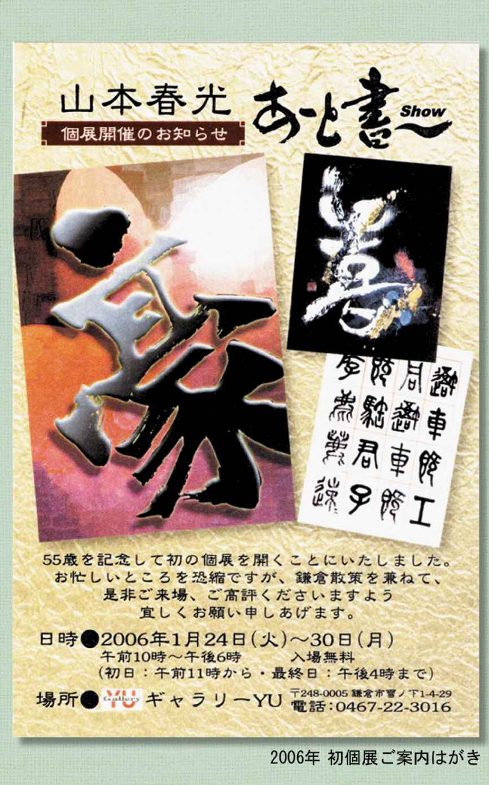

| 「天空書」への道: 百年後も残る樹々のメッセージ | |
| 山本春光 | |
| (2016) | |
「はじめに」
この度は本書をお手にしていただき、誠にありがとうございます。
自分が電子書籍を出版するなどとは、まったく夢にも思っていないことでした。
でも、自分が生み出した「天空書」という書道の芸術作品を多くの方々に認知していただきたい思いは温めていたのです。
その方法の一端に電子書籍があると気づかせていただきました。
小中学時代の宿題である読書感想文や作文が、一向に書き進められないという文章作りの苦手意識は、いまだに健在なのです。
こんな私が出版できるのかしら？との懸念はありながらも、チャレンジ精神の方がそれを上回っておりました。
これが「天空書」です。
ではなく、この「天空書」を生み出した山本春光とはどんな人なのかを書いていくこと。
そうアドバイスをもらった時、
「あっ、それなら書けるかなあ」と、単純に捉えたのです。
自分の経験 (あくまでもしごく個人的なことです) が、何かのカタチでどなたかのお役に立つ部分があるとすれば、それは大いに嬉しいことです。
その都度、その都度の思いや考えを綴ってみました。
電子書籍を出版するなんて！と思っていた自分なのに、いざ意を決して臨むと、お伝えしたいことが次々出てきて、まとめるのに四苦八苦いたしました。
不慣れなことに一念発起して挑戦してまいりました。
「精一杯」が伝われば有り難いことです。
★ モノの見方、捉え方、考え方。
「もう」と「まだ」ではこんなに違う。
例えば、円筒形も上から見ると円、横から見ると長方形。
自分がどう見るかでカタチが異なります。
例えば、起こってくる出来事も自分がどう捉えるかで真逆にも受け取れます。
不運な出来事であっても捉え方次第、考え方次第で、今までよりも一層の幸運に気づくキッカケになったりもします。
私が病を得たことは幸運だったのです。
（病のことは後ほどお話しいたしますね。）
さて、あなたは何かを始める時、年齢を気にしたことがありますか？
これも後ほど述べますが、私が書道を習い始めたのは四十歳。
初めての個展は五十五歳。
「天空書」が自分のミッション（使命）だと気づいたのは六十三歳の時でした。
「もう」と諦めてしまうのか、「まだ」と挑戦するのか。
大きな境目だと考えます。
一度きりの人生です。
「もう」は封印して、果敢に挑戦していくことが楽しい人生、後悔しない人生、価値ある人生につながることだと確信しています。
私は最初からこんなに挑戦的だったわけではなく、「あきらめない強さ」を持つ訓練をコツコツ重ねているだけのことなのです。
何か始めるチェンジは「挑戦」です。
「やってみないとわからないこと」を「やらないでいる時間」がもったいない。
そう思うのです。
無駄に「やってみる」のは、それはそれで問題があります。
自分がやりたいことなのか？
自分がやるべきことなのか？
その確認は重要ですよね。
だれにも公平に与えられた時間は有限であり、いのちでもあるわけで、
「やらないでいる」時間も、この瞬間瞬間、過ぎていくのです。
たとえ、やった結果が良くなかったとしても、そこからどれほどの学びと気づきを得られるか知れません。
結果の良し悪しを検証して、また「チェンジ・挑戦」すればいいだけのことです。
私はそうやってまいりました。
「変える勇気・変わる勇気」です。
★ 「天空書」って何？
タイトルにある「天空書」って何？と思われた方。
表紙写真の木彫りの書「挑戦」がまさしく「天空書」です。
初めてご覧になる方も多いのではないでしょうか？
山本春光(しゅんこう)が試行錯誤を繰り返し、独自に生み出した書のアールヌーボーとも呼びたい芸術作品です。
多くの方々に知っていただき、「天空書」が発するパワーから、元気・勇気・希望・優しさ・癒やし...などを受け取っていただけたら、この上ない喜びです。
書道って楽しい趣味。
楽しんで向き合っていると、思っても見なかったカタチが生まれ出る。
「創造」することは「想像」することから始まりました。
第一章 では
「天空書」ってなに？をもう少し詳しくお伝えいたします。
「書道？興味ないなあ」
そう思われた方、あなたの想像を超えた「書」に出会えるチャンスです。
読み進めてくださいな。
第二章 では
書道ってもっと楽しいこと！どうしたら楽しくなる？を追及していった「天空書」に至るまでの私の書歴を述べています。
変革、変貌の様子をお伝えいたします。
第三章 では
世間でよく言われる「ピンチはチャンス」は本当だと気づいた自分の乳ガンの体験記を綴っています。かなり個人的な内容です。
病気のことをお伝えする意味がどれほどあるのか、最初は戸惑いもあったのですが、どなたかの何かしらのお役に立てばとの思いで書き綴ってみました。
私はこの病気に出会ったからこそ、どのように生きていくのが自分らしいのかに気づけたのです。
第四章 では
いよいよ「天空書」誕生の瞬間（とき）をつづりました。
人は「使命」に気づいて「命を使い切る」人生を送るということについての内容です。
自分が考えついたことではありませんが、学んだことです。
いつからでも使命の軸を太くして、成りたい自分・在りたい自分を目指すことは可能であるということ。
そこには年齢の早い遅いは関係なく、気づいた時から目指して進んで行けるのです。
そう、六十六歳の今の私でも。
第五章 では
これまで開催した個展からの経験を元に、そこからの学び、気づき、発想、などを綴っています。
私が生み出した「天空書」のこれから、希望や夢、壮大なビジョンも語っています。
自分の未来は自分の手で創りだしていくもの。
「まだまだこれから」と思える喜び。
溢れる感謝を想います。
では、順を追ってお話を進めてまいります。
また、「おわりに」でお会いいたましょう。
山本春光
第一章 「天空書」って何？
★ 「楽しい書道作品展」へのイノベーション
日本古来の伝統文化である書道。
私も書道展には足繁く通った時代がありました。
勿論、自分の作品が出品されていることもあったり、日本の著名作家の作品を拝見することも多々ありました。
行草体で表わす書芸術は、崩し文字も多様され、元の楷書漢字から遠く離れたカタチになるものも数多くあります。
その崩した書体のカタチの美しさが書の芸術性を一層高めているわけではあるのですが。
勉強不足を棚に上げて申しますが、ずらりと並ぶ書が何と書かれてあるのか理解できないのです。
ある時からは、紙の白と墨の黒が織りなす、絵というかデザインとして観ている自分がいました。
笑い話ですが、数年寝かせていた自書の軸装を吊るしてみた時、
「えっ？これ、何て書いてあるの？」
と、私。
自分で書いた字がすでに読めない。
愕然といたしました。
漢字には意味があり、それを伝えたいから、ご覧になる方にそれが伝わる。
伝えたい言葉(言霊)は、まず読めないと伝わらない。
読める字で表現したい。出発はそこからでした。
★ 書家 山本春光(しゅんこう)オリジナル作品「天空書」
「書道の話かぁ、興味ないなぁ」
と思われた方、ちょっと待ってください。
よくある書道ではないのです。
「えっ！ なに？ これ。初めて見る」
そういう声もたくさん聞かれ、いまや
「驚きの書」
となりました。
和紙に墨筆する二次元の書道を、各種樹々を素材に、立体の三次元で表現した書のイノベーションとも言うべき作品です。
更に時代を超えて受け継がれることを希望した、四次元の世界までをも意識した作品となっています。
紙に表現した書は、経年劣化というか、変色・シミ・破れに見舞われたりすることがあります。
百年も二百年も書を残す方法はないかしら？樹木はどうかしら？
樹木に関してはまったくの門外漢ではありますが、感覚で引き寄せました。
書道からは一見遠く距離を隔てたかのような、電動糸のこぎり（ミシンのような形の木材を切る機械）との出会いが「天空書」を誕生させてくれました。
装丁する額は滋賀のフレームアーティストの方に、すべて欧州製(イタリア・スペイン製)モールディング(飾り枠)でカスタムオーダーしております。この方もすべてが手作りなのです。
木の文字が浮かび上がる装丁を駆使し、木目の美しさ、言葉への思い、光と影、つまりは木霊(こだま)と言霊(ことだま)と春光の魂を凝縮させた作品に仕上げました。
そしてこれを「天空書」と名付けました。
百聞は一見にしかずと申します。
まずは「天空書」の作品写真をごらんください。
次の章では、この「天空書」に至るまでの書の楽しさの変遷をご紹介いたします。
◯この章のまとめ
★ 楽しい「書道作品展」へのイノベーション
★ 書家 山本春光(しゅんこう)オリジナル作品「天空書」
★ 『天空書からのメッセージ』
第二章 「天空書」に至るまでの書の道
★ 書との出会い ～四十歳の手習い～
私の二人の娘たちは小学生の頃、近所の書道教室に通っていましたが、中学生になり部活動との両立が難しいとの理由で、教室を辞めることになりました。
手元に娘たちの筆や硯（すずり）が残されました。
それらを見て、私も書道をまた習ってみたいと思い立ったのが、ちょうど四十歳の時のことでした。
思い返すと遠く小学四年生の時のこと。
私が卒園した幼稚園には、書家のご夫妻が出向いて来られ、私は習字を習いに通っていた時期がありました。
奥様先生からいただく飴を口にしながら、墨をする時間が何とも楽しかったのを、墨の香と共に覚えております。
六年生の時には、母と一緒に先生宅を訪ね、
半切（サイズ１３６×３５ｃｍ）に太い筆で書いたのを思い出します。
青々とした松は永久の春をなしているという意味の「青松終古春（せいしょうしゅうこのはる）」と書き、母はそれをきちんと軸装してくれたのでした。
白くきらきらと輝く表装だったのを覚えています。
初めての、それも大きな軸装は、とても立派なものとして出来上がり、小学六年生の私にとっては非常に晴れがましく嬉しい出来事でした。
この原体験は、今の書に対する思いに大いに影響しているのかもしません。
さて、四十歳で始めた書道。
子供達に混じって習うのですが、その子たちのお喋りも、かん高い笑い声も気にならない程の集中力でした。
あの場で得た集中力は、その後大いに活かされたように思います。
級が上がっていくという楽しみもウキウキするものでした。
数年後、先生や私自身の引越しに伴い、新たな師に巡り逢うことになります。
★ 書道の奥深さ
ご夫妻で書家であられる新たな師は指導力も素晴らしく、みるみるうちに私をより高いステージへと歩ませてくださいました。
師は二つの書道会に属しておられ、学びたいと希望すれば、段級に関係なくどんな書体も惜しみなくご指導くださいました。
書道会の月一回の発行誌には、毎回のように写真版として私の書も掲載されるようになり、学ぶ楽しみが増したのは言うに及びません。
「古代文字」に始まり、「篆書(てんしょ)」「隷書」「楷書」「行書」「草書」「かな」「調和体」、そして古い中国の書を学ぶ「臨書」。
学びを深める毎に、のめり込むように書に魅せられていきました。
各種の書道展にも出品し、師のご指導で受賞も増えました。
属する書道会では各ジャンルでも師範の位をいただきました。
また、私は他流試合のように、一人で独自の全国規模の作品展にも応募したりしていました。
毎週のお稽古はそれはそれはとても楽しく、師が筆を執られる度に、その筆の運びを食い入るように見つめ、何とか技を盗み取ろうとしました。
と、同時に筆を置かれた時は、何とも言えぬ感嘆の思いに包まれるのです。
この筆の動きは無形文化財のようだと...
いよいよある時は、ビデオカメラを持ち込み
「先生、書いておられるところをビデオに撮らせてください」
と、お願いする始末。
そんな風にお稽古を進める内に、次第に師の書を真似ることから、自分なりの作品として作り上げていく面白さに目覚めました。
書道を学び始めて十年ほどは経過していたでしょうか。
朝五時に起きると、１０ｃｍほどの分厚さの書の大辞典と首っ引き。
半切(サイズ１３６×３５ｃｍ)の紙に何枚も試行錯誤で書き続ける楽しさ。
趣味も楽しさが根底にあるからこそ続けられますね。
★ 独自の「あ～と書」の誕生
書に対しての私の好奇心はとどまることを知らず、文字の持つ意味を自分なりにもっと表現したいと考えるようになりました。
「白い和紙に黒の墨で筆で書く」という書の常識からの「脱却」です。
この表現はちょっとオーバーですが、要はこうしたら面白いんじゃない？との思いが募っていったのです。
「春」いう字に淡いピンク色を、「風」という字に爽やかなブルーをといった様に色彩を加味していきました。
和紙だけじゃなく、石や板、布、革。いろんなものに書いてもいいんじゃない？これって楽しい事じゃない？
和紙に書いた書をパソコンにスキャンして、多種のアプリケーションを駆使しながらの「デジタル書」ってどう？
私の書はどんどん進化、深化していきました。
★ 「あ～と書個展」初開催からニューヨークへ
こんな風にしていつの間にか作品が増えていったのです。
いよいよ初個展を開催する決心をいたしました。
二〇〇六年一月、五十五歳の時、まさにＧＯＧＯを記念して「あ～と書個展」を鎌倉で開催しました。
ベーシックな書道作品に混じって色彩を加味したものや、直筆ミニ額、デジタル書、着物生地の和布をあしらった作品。
ご来場者様に楽しんでいただけるよう工夫をこらしました。
作品のポストカードも並べましたら、好評で売り切れてしまうものが出ます。
毎晩補充のプリントアウトをしていました。
手作りの芳名帳には、未知の方々の温かい言葉が連ねてありました。
書の楽しさが伝わった。
書の概念が変わった。
こんな表現があることに驚いた。
作者が楽しんでいるのが伝わってくる。
ビギナーズラックとはこのことを言うのですね。


次の個展を考えていた時のことです。
「海外で個展を開くといいんじゃない？
外国人って日本語や漢字に興味があるらしいよ」
「そうみたいね。ハワイ？ オーストラリア？どこがいいかしらね？」
半ば冗談の私。
「そりゃあ、アートはニューヨークでしょ？」
いろんな方に質問する度に「ニューヨーク！」との答え。
今度は海外！それもニューヨーク！
二度目の個展だというのに、ニューヨーク！
との声に、無謀にも私は決心してしまうのです。
ニューヨークで個展を開こう！
当時、知人（若き女性アーティスト）がニューヨークで絵の個展を開いたのを耳にしました。
私はニューヨークへは行ったこともなく、知り合いすらいない街です。
英語も話せないというのに。
やっぱり無謀ですよね。
その知人を頼ってニューヨークのギャラリーを紹介してもらうことになりました。
幸いにもギャラリーのオーナーのパートナーは日本人で、以降のやり取りを親切に教えていただきました。
そして、そこから 一年かけて開催費用を貯めました。
作品もバージョンアップさせていきます。
光(ＬＥＤライト)とコラボレーションさせた作品の誕生がこの頃のことです。
厚みのある額を使用。裏板にＬＥＤライトを設置して、数種のライトがランダムにフェードイン・フェードアウトを繰り返します。
この点滅コントロールの仕組み部分は、コンピュータエンジニアである夫の協力なしには完成しませんでした。
書が書かれた半紙を通して、淡い光が揺れる幻想的な「あ～と書」は今でも唯一、ひとつだけ手元に置いている大切な作品です。
こうして二〇〇八年九月、ニューヨーク・マンハッタン中央の西側、チェルシーというギャラリー街で個展を開催いたしました。
ギャラリー街といっても、ビルの三階にあり、とてもわかりづらく、鎌倉のようにふらりと通りすがりの人々がのぞいていくという感じではありませんでした。
外国人から観ると、軸装の書はスクロールできるという新鮮さでとても興味を示されていました。
全体的に小ぶりな作品が並ぶ私の「あ～と書」。
「アメリカ人は大きなものが好きなんだよ。
もっと大きな作品を創るといいね」
とオーナーの感想。
「ウェブページは持っているかい？ 世界に広めるにはウェブページを作ること」
と、教えてくれた黒人男性。
当時ウェブページを作るのも、まだかなりの費用を要するものでした。
今のウェブページは数年経ってから自分で作りました。
ここで、ニューヨークでのエピソードを少々。
職場の友人を誘ってのニューヨーク二人個展旅。
宿泊のホテルからはエンパイヤーステートビルまで歩いて行ける距離。
初日に絶景の夜景を楽しみました。
続いてニューヨーク市内観光も予定に入れ、ブロードウェイのミュージカルチケットも日本で予約しておきました。
「オペラ座の怪人」を鑑賞。
英語は全く話せないし、聞き取れないので、ＤＶＤを借りてストーリーを勉強してから渡米です。
そう、英語は話せません。なのに「ニューヨーク個展」です。
無謀さにも程があるというもの！
ここで、英語が使えないエピソードを二つほど。
●ファストフード店での飲み物のオーダーが上手く伝わらず、何とも驚くほど大きなカップが差し出されました。
まあ、ニューヨークでは普通のサイズかもしれません。
こんな量をいつも飲んでいたら、あの体型になるはずだなあと思いながら...
●ニューヨークでの移動は地下鉄を利用しました。なので、回数券（らしきもの）を求め、ドキドキしながらニューヨーク地下鉄に乗り込みます。
いざ、改札へ。
なのに、何と通れない！？！
回数券を買った。改札機にチケットは吸い込まれた。
だけど改札は開かない。
チケットも出てこない。
そこで駅員さんに申し出るのです。
単語だけを並べる、会話と呼べない会話。
黒人の駅員さんは丁寧に対応してくれていたのですが、どうもこちらの要を得ない英語に、業を煮やしたのか、
「はいはい、わかったよ。通っていいよ」
と、ジェスチャーで示し改札を開けてくれました。
せっかく買った回数券が使えず、英語力の無さをまたもや棚に上げて言えば、釈然としない思いが残りました（恥）。
こんな物見遊山のような「ニューヨーク個展」に自由の女神ならぬ個展の女神は微笑むはずもなく、二週間の個展開催中には、あの「リーマンショック」で大騒ぎとなる日も含まれ、ある意味忘れ得ない個展となりました。
初の海外個展では、作品は一作も売れず、それでも一週間を過ごしたニューヨークの街はとても刺激的で、よかったなあと甘い自分をどこかで許していました。
甘くみて取り組んだことは、結局、甘い結果を自分に突きつけてきます。
原因がそうだから、結果がこうなのです。
やったことしか結果として残らない。
大事なことを学びました。
バーゲンで手にしたお土産と、古い教会とモダンなビルがマッチする街並みの光景と、多人種が行き来するマンハッタンのある意味感じた冷たさも、スーツケースに詰め込んで帰国の途につきました。
挑戦を決めたなら無我夢中でやってみるしかないと思います。
失敗は学びでしかないとずっと以前から思っていたので、ある意味怖いもの知らずでＧＯできるのです。
いっぱいの失敗を重ね、そこから学び、またトライ！
ニューヨーク個展も一つの大きな経験と捉えた私は、それ以降も、紙に残す書を違うカタチで残したいと空想し続けていました。
紙のように汚れたり劣化しない表現方法...
樹木を使ってみるかなぁ。
漠然とアタマの隅に浮かんでは消え、消えては浮かびを繰り返していた思いでした。
次の章はいよいよ「天空書」誕生秘話に進みます。
どうしても外せない話があります。どうぞ読み進めてくださいね。

○この章のまとめ
★ 書との出会い ～四十歳の手習い～
★ 書道の奥深さ
★ 独自の「あ～と書」の誕生
★ 「あ～と書個展」初開催からニューヨークへ
★ 『天空書からのメッセージ』
第三章 言い尽くされた「ピンチはチャンス」は本当のこと！
★ まさかの不運は誰にでもおとずれる
もしかしたら、不運は大きさ・カタチは違えども、各人の人生に組み込まれているものなのかもしれません。
あきらめず何とかして乗り切ろうとチカラを尽くして成長して行けるようにと。
きっと不運は乗り越えられるものなのです。
「打つ手は無限」にあるのだから、人のチカラも知恵も借りながら、きっと乗り切っていけるのです。
あきらめさえしなければ。
これからの話は「天空書」誕生秘話には欠かせない内容なのです。
楽しい話ではありませんが、ガンだったということを書かせていただきます。
「だった」と過去形にあえていたしました。
まだあと数年、毎年、経過観察の検査は受けねばなりませんが、お陰様で治りましたと思い込んでいるのも、精神衛生上は良きこととの勝手な判断です。
私のガン顛末記はきっと、どなたかの参考になるのでは？
との思いの、すこぶる個人的な話ではあるのですが。
しばらくお付き合いください。
★ まさかのガン発症
なに？このしこりは。
二〇一〇年初夏のことでした。
右乳房にハッキリとしたしこりを見つけました。
「ただの脂肪じゃない？」
と、軽く言い放つ友人とは違い、直ぐ病院に行くようにと言った夫。
町医者の「すぐに大きな病院を紹介します」という言葉。
その大きな病院での検査途中の医師の
「うーん、あんまり良いものじゃなさそうだね」
の言葉はモヤモヤ、ザワザワ、不安不安を引き寄せました。
それまでの私は必ず健康診断を受ける習慣を持っていたのです。
すべてＡ、何の問題もないですよとの毎年の結果に油断したのか、高をくくったのか、仕事の忙しさを理由にしたのか、二回ほど検査をスルーしたのです。
毎回の健康診断はあなどれませんねぇ。
そして、いよいよの検査結果は
「乳ガンの第二ステージ。右脇リンパ節にも転移」
という診断でした。
それまでの不安で半ば予想できていたのか、よく言われる
「頭が真っ白になる」
の経験はなく、淡々と一人で医師の説明を聴いている自分がいました。
はて、困った。
眼前に起こった困ったデキゴト。突発的に現れた問題。
いずれにせよ、これは自分自身が解決すべきこと。
あの人が、あの状況が、の責任転嫁はもちろん論外ですね。
「自己責任」、自分事として取り組むしかありません。
アタマを抱えるデキゴトの出現も、それから逃げずに立ち向かうことで解決に向かうと思っておりました。
ピンチはもっとより良くなるための「ギフト」・「チャンス」。
当時、これほどまでに思っていたかは疑問ですが、少なくとも泣きわめくことも落ち込むこともなく、乳ガンをしっかり自分事として受け入れていたのは確かなことでした。
と、同時に
「絶対治す！絶対治る！」
と、自分に言い切っている自分がいました。
この根拠のない思い込みは、意外と自分の精神力を、以降もずっと支えていくものとなりました。
還暦を迎える一ヶ月前のことでした。
『日本人の二人に一人がガンになり、三人に一人がガンで亡くなると言われていますが、生涯でがんに罹る確率は、男性で六三％ 、女性で四七％ と男性の方が高くなっています。』
（参考 ※がん情報サービス「がん罹患率～年齢による変化 」 ）
★ グアム旅行と第一回目の手術
ガンを宣告された私は翌月の還暦祝いと、抗がん剤を始める前の元気なうちにとの思いで「夫婦で行くグアム旅行」を企画しました。
何回も訪れている身近な南国グアム。
南国好きは小学生の頃、家族で出かけた九州一周の旅での宮崎に起因します。
青島の鬼の洗濯板、鵜戸神宮付近を走る車窓からはそれまで見たこともない海の青さが広がります。
こんなに綺麗な海があったなんて！と宮崎の海のブルーにすっかり魅せられてしまったのです。
幼き頃の原体験とも言うべきものは、永く人生に影響するものですね。
それからの南国好きは、六十六歳の今も健在です。
シュノーケリングで南国の魚たちと戯れた思い出は鮮明な印象として今も残っています。
上半身はラッシュガードを着ていたのですが、膝から下は無防備。
なんと、ふくらはぎが真っ赤に大やけど！
それほどに浅瀬で魚に夢中になっていたのか、お日様が強過ぎたのか。
ホテルでずっと冷やしていましたっけ。
海外旅行も最後になるかもしれない、とのちょっとセンチな思いも吹き飛ばすような真夏の眩しい太陽でした。
これから始まる初体験の抗がん剤治療に、淡々と立ち向かう準備が出来たとの感がいたしました。
ガンと判明した当時、私は細胞の遺伝子(ＤＮＡ)の修復をするという健康補助のサプリメントを摂っていました。
摂るようになって、半年を経過した頃でした。
あらゆる病気は遺伝子の傷が原因。
それを修復したり、修復不可の場合は、その細胞自身を死滅させていくというのです。
健康だった私でしたが、年齢を重ねてきたこともあり、予防医学の上からもサプリメントを摂り、健康のまま生涯を過ごしたいと思っていました。
そのサプリメントの驚異的な結果を目の当たりに知っていたこともあり、これで、ガンも治そうと思っていました。
当時のガンの三大治療法である「抗がん剤・手術・放射線」の西洋医療も受けながら、代替医療とも呼ぶべきサプリメント摂取で乗り切ろうと私は考えていました。
半年の抗がん剤治療とサプリメント代替治療は、医師も驚くほど功を奏し、画像からはガン細胞が消えるほどの結果をもたらしました。
「やったぁー」
心の中で幾度もの万歳三唱です。
当初、医師からは「データが取れないのでサプリメントは摂らないように」と指示がありました。
サプリメント摂取を医師に尋ねた時、先程の答えだったのですが、医師が開いた厚い医学書にそのサプリメント会社が扱う製品の成分が掲載されていたのを、私はしっかりと目の端に留めました。
私の治療はデータを残す必要がある。
後々の人に貢献できること。
でもその時はそんな綺麗事よりも、いかに治すか、治るかが第一と考えていた私は、医師の指示には従わず可能な限りのサプリメントを摂り続けました。
実は医師からは
「あなたのガンは特別厄介なタイプのものです。全身ガンと捉えて対応していかねばなりません」
と最初から聞かされていました。
画像からガン細胞が消えていたので、私は手術の必要はないと思っていました。
ところが、映り切らない極小ガン細胞もあること、右脇のリンパ節への転移もあることで、医師・看護師の説得に次ぐ説得で二〇一一年一月に乳房温存手術を受けることになりました。
★ 当たり前は「有り難さ」の奇跡
手術後も、連続二十五日間の放射線治療が待っていました。
仕事を続けながら、早退しながらもこなしました。
手術、放射線治療が終わったから
「はい、もう良し！」
とはいかず、私の「厄介なガン」は全身治療を要するため、その後も、また別の抗がん剤治療が一年間続くのでした。
ここで抗がん剤の体験談をお話しさせていただきます。
「脱毛するので髪は短くして、カツラも用意したほうがいいでしょう」
とのアドバイスに、娘たちとワイワイガヤガヤ試着したのを思い出します。
抗がん剤治療が進むにつれ、みるみる毛は抜け落ち坊主アタマに。
初めて見る髪のない自分のアタマ。
小学生はおかっぱで、中学生ではショートにも。センター分けやワンレングス時代も長かったなあ。
髪が多くてパーマをかけると、とんでもない爆発ヘアースタイルになり戸惑ったこともありました。
それが、髪の毛が一本もない坊主アタマ。
これは記念すべきこと！と、悲壮感はなく携帯であらゆる角度から自分のアタマを撮って残しました。
またある時は、風邪をひいているわけではないのに、突然鼻水がツウーッと流れ落ちるのです。
鼻毛も抜けていました。
この時、
「当たり前って有り難い奇跡のようなもの」
だと気づいたのです。
鼻毛って鼻水を止めてくれているもの。
呼吸する空気のゴミの進入を防いでくれているもの。
その有り難さにそれまでは気づいていなかったのかも知れません。
そう思うと数限りない「当たり前」が、有り難さ・奇跡にとつながりました。
「明日、目覚めるという確信はなく...」
と気づいた時から、当たり前のように訪れる日々は、有り難さに満ちた「奇跡」だと思っています。
★ 抗がん剤の副作用
「クスリ」は「リスク」を伴います。
抗がん剤は効果がある反面、ある意味恐ろしい薬であることも経験しました。
副作用が
「えっ？こんなにも？」
というほど箇条書きされた小冊子が渡されました。
脱毛、口内炎、味覚障害、皮膚炎症、手足のしびれ、脚のだるさ、巻き爪、、、
私が体験した副作用の一部です。
当時知り合った同じ乳ガンの方は、両手両足の爪が真っ黒に変色し、抗がん剤を投与すると食事も受け付けないので、しばらく入院して点滴を受けると聞かせてくださいました。
抗がん剤の種類にも、個体差にも関係あるとは思いますが、私の諸々の副作用はそのための入院は必要とせず、まあ、この程度は仕方がないかとやり過ごしました。
五年以上経った今も、副作用はデトックスされることはなく、脚のだるさや足指のしびれ、巻き爪は困難なことで、着圧タイツ・ハイソックスは勿論のこと外せず、オシャレなヒールの靴は一瞬で脱いでしまいたくなる程、爪が変形しています。
「身体から抗がん剤が抜け切るのは年単位で考えてください。ずっとそのままということもありえます」
医師の言葉は遠くで冷たく聞こえました。
★ 東日本大震災後の夫の言葉
手術後の抗がん剤治療を始めた頃、二〇一一・三・一一の東日本大震災が起きたのです。
連日信じられないような映像が画面いっぱいに映しだされ、重苦しい毎日が続いていたある日、夫が次のように切り出しました。
「ねえ、最期を迎える覚悟だけはしておこうよ。明日目覚めるという確信はないのだから。
もし、目覚めたらその日を今までで最良の日にしよう。
だから、やりたい事はやっておこうよ」
突然の震災、津波で目覚められなかった方々、ガンという病に向き合っている私、両方への思いからついて出た言葉だったのでしょう。
いのちがなくなる覚悟はその場ではできなかった私。
でも、「やりたいことはやっておこうよ」に何故か反応した私。
「覚悟」はひとまず置いて、
「じゃあ、電動糸のこぎりが欲しいんだけど！」
樹々で書を表現してみたい！
ムクムクと湧き起ってきた
「私のやりたいこと！」
電動糸のこぎりが私にとっての必然でした。
◯この章のまとめ
★ まさかの不運は誰にでもおとずれる
★ まさかのガン発症
★ グアム旅行と第一回目の手術
★ 当たり前は「有り難さ」の奇跡
★ 抗がん剤の副作用
★ 東日本大震災後の夫の言葉
★ 『天空書からのメッセージ』
第四章 「天空書」誕生の瞬間（とき）
★ またもやのめり込む「木彫り書」
頑丈な作業台が運び込まれ、電動糸のこぎりが設置されました。
まずトライしたのは、孫たちへの木製はめ込みパズル。
Ａ３サイズくらいの板にたくさんの魚をデザインして、任意に切り出せるかを試してみます。
折角だから着色し、ニスを塗りそこそこのクオリティーのパズルが仕上がりました。
孫二人と友人にプレゼント。
三セット作り終える頃には、電動糸のこぎりはうまく扱えるようになっていました。
さて、「天空書」は薄い板からトライです。
常々アタマに描いていたモノや、想像していた方法があり、電動糸のこぎりを丁寧に扱いながら次々とカタチにしていきます。
初期の頃は彫刻刀を使い、切り出した角を落としていったのですが、手術後の右脇が痛みます。なかなか進みません。
全くのオリジナルで始めた「天空書」なので、師匠がいるわけではないのです。
道具が最初から揃っていたわけでもありませんでした。
電動の彫刻刀はあるのだろうか。
インターネット通販を調べます。
ホームセンターを見て歩きます。
見つけ出した電動彫刻刀。でもやはりその振動が手術痕に響きます。
痛むからとやめてしまったら、樹々で書を表現したいというベースのところから崩れてしまうのです。
もう、こうなったら勝手に意味付けしてしまいます。
「リハビリ、リハビリ！」
この振動はリハビリになるかも？！
足のだるさも作業台の下に置いたフットマッサージャーのお世話になりながら、木に向かうことに没頭できました。
ここで、あの書道を習い始めた頃の集中力が発揮されます。
ここまで削ろう、ここまで磨こうとの思いが、手術痕の痛みを気分的にも軽減してくれました。
そうそう、これがしたかったの！
カタチが整うに連れ、喜びが増して行き、道具も増えていきました。
さてさて、磨きっぱなしはどうも様にならないのです。
今度は仕上げ剤があるのだろうかとまた調べます。
「打つ手は無限」にあるものです。
基本は化学製品ではない自然のものを探します。
江戸の職人さんが使っていたという「荏油(えあぶら)」に出会います。
柿渋も試しました。色が多少着くので、それを意図した作品には良いのですが...簡易うるしも試しました。
荏油を使うことに決めます。
創りたい文字、素材、道具などすべてを自分で決めていくのは気持ちの良いものです。
反面、すべての責任を自分が持つということでもあります。
次はもう少し厚い板で、いろんな材料の樹々で、と段々にエスカレートしていくのです。
★ 二〇一二年 鎌倉で三度目の個展開催
そんな当時「木彫り書」と名付けたそれらの新しい作品も含め、
「ＮＥＷ ＹＯＲＫ ＡＧＡＩＮ」
と副題をそえて鎌倉で三度目の個展を開催いたしました。
その個展ではニューヨークで出品した作品に加え、「木彫り書」と「木彫りエアー書」もデビューしたのです。
一週間で一〇〇〇人近いご来場者様。
新しい書のカタチに興味を示してくださいました。
展示作品の八割がご購入につながり、木彫り書も木彫りエアー書も大変にご好評いただきました。
ご希望文字での次々のご依頼に嬉しい悲鳴となったものです。
特に、天空書の原型ともなった「木彫りエアー書」には多くのご関心を寄せていただきました。
★ フレームアーティストさんとの出会い
その後、木彫りエアー書を漢字一文字から、より深い意味が伝えられるよう二文字以上の言葉にしていこうと取り組み、それが滋賀のフレームアーティストさんとのご縁につながります。
ある程度の奥行きと特殊な造りを必要とするフレームを東京・横浜で制作してくれる額装店には出会えませんでした。
そんな頃、滋賀のフレームアーティストさんをご紹介いただいたのです。
滋賀に出向き、直接フレームアーティストさんにこういうものを創りたいと熱く語る私に、ならばこうしてみようと工法を説明してくださいました。
思いのこもった作品なので欧州製のモールディング(飾り枠)を使って、高級感あふれる作品にいたしましょうと。
以降、すべてのフレーム作りをお願いしています。
「早よ、ビッグに成りやぁー」
と言う彼は心強い「天空書」の応援者のひとりです。
でも、人生とはそのまま順風満帆にはいかないもので...
★ 特別厄介なガン
ガンを忘れたかのように木彫り書に没頭しておりましたが、厄介なガンと聞かされていた通りの出来事が連続して起こります。
定期的な経過観察の検査の結果、二〇一三年三月、ガンが再発してしまいます。
またもや手術。その半年後にも再発が見つかります。乳房温存を希望していましたが、もはや全摘するしかなく...
三度目の手術となってしまいました。この時ばかりは少し落ち込みましたねー。
最初の手術の時、ガン細胞は消えたのだからと手術を拒否する私に
「まだ六十歳なんですよ。まだまだ生きることを考えて！」
主治医の説得を思い出しました。
「特別厄介なガン」とはこういうことだったのかを思い知りました。
★ ミッションはこれだった！「天空書」の誕生
三度目の手術の前月、フェイスブックでつながっていた著名な方の講演会に参加する機会を得ました。
講演会など初めてのことです。
今、思うとこれも必然の出逢いだったのでしょう。
歯学博士でもあり、セラピスト、著者、講演者といくつもの顔を持つ、
井上裕之先生がその人でした。
その時の講演が「ミッションについて」でした。
ミッション(使命)を持つことの大切さ、潜在意識という自分の中の天・宇宙のエネルギーを使うことの大切さ。
生きていく上での、他者ではなく自分自身の人生の羅針盤、人生の軸を持つということ。
自分が生まれてきた意味は？使命・命を使うということは？
それらを考えた時、文字通りスポンジが水を吸うように井上先生の言葉が心の中、身体の中に沁み渡りました。
腑に落ち、納得したのです。
私のミッションは今手掛けている「木彫りエアー書」なんだと。
その翌日、少し熟考していたこともあり、思いきって
「木彫りエアー書」を
「天空書」と改名、命名したのでした。
フレームに装丁した木の文字が天に浮かび上がる。
「天空書」の誕生です。
天から与えられた使命をいかに使うかということ！
自分の中に広がる潜在意識という無限の可能性をどう使うかということ！
天＝宇宙のエネルギーをいっぱいに秘めた自然の樹々をいかに美しく表現して使い切るかということ！
「天空書」の誕生です。
★ バランスの法則
「天空書」の誕生はミッション（使命）という新たな目的を持ち得て、創作の喜びの毎日でした。
そんな折のガン再再発。
全摘出という三度目の手術に落ち込んだ私はフェイスブックで、井上先生に気持ちを吐露してしまいます。
その時、
「失くすと与えられるのがバランスの法則です」
とだけ応えが返ってきました。
その言葉は私にとって大きな救いとなり、強い勇気となり、私の書への思いは天から与えられたものなのだと解釈しました。
右胸は失くしたけれど、与えられたものが「天空書」なのだと明確に気づくことができました。
「天空書」を創ることで、そこに込めた私の思いや、天・宇宙のエネルギーを宿した樹々からのパワーは、人に何かを伝え、人のために役立つのだと確信したのです。
その後、嬉しいことに井上先生は
「天空書は山本さんの天命だね」
と、お声をかけてくださるのです。
★ 不運は有り難い戴き物
現在でも毎年一回のガンの経過観察の検査は欠かさず受けています。
あと何年続くことでしょう。
「検査結果が良かったら、また一年寿命が延びたと思えばいいね」
と、夫は言います。
このまさかの不運・苦難は私にとって、決して負け惜しみではなく、計り知れない大きないただきものであったと思うのです。
「病はサムシンググレートからの贈り物」
『サムシンググレートは筑波大名誉教授・村上和雄氏の言葉』
何も不運が起こらなかった人生、それはそれで素晴らしく幸せなことです。
不運に見舞われた人生、それをそのまま嘆かず、他人のせいにすることなく、負をプラスに変えようと努力した先にはご褒美が用意されているのでは？と感じます。
通り過ぎてしまったので
「ああ、そう言えば大変だったかなあ」
と他人事のように思える今があります。
まだ残る抗がん剤の副作用も
「当時よりはずっとマシになった」
そう言い聞かせている自分もいます。
モノゴトはどう捉えていくかで一八〇度結果を変えていけるものです。
トンネルはいつまでもトンネルではなく、その先に明るい光が見えてくるのですよね。
自分で近づいて行こうとしない限り光には到達しないでしょうけれど。
必ず乗り越えられると自分を信じて、自分の中の潜在意識という「天」を信じて、自分のミッション・軸に沿って生きていく先には一条の光が輝いているものです。
「最期を迎える覚悟」は、まだできていないけれど、
「精一杯生き切る覚悟」はできております。
「後悔しない価値ある人生」をつくっていくと決めるのに、遅いも早いもなく「その時」から邁進すればいいのです。
四十歳で始めた書道。五十五歳の初個展。いろいろを経ての六十六歳の現在。
生きた証しを残すための私の人生は
「まだまだこれから」
と思える幸せ。
何かを始めようとしているあなた。「もう」ではなく、「まだ」に気づいてくださいね。
「もうこれだけしかない」ではなく「まだこんなにもある」
この考え方は幸せを運んできます。
◯この章のまとめ
★ またもやのめり込む「木彫り書」
★ 二〇一二年 鎌倉で三度目の個展開催
★ フレームアーティストさんとの出会い
★ 特別厄介なガン
★ ミッションはこれだった！ 「天空書」の誕生
★ バランスの法則
★ 不運は有り難い戴き物
★ 『天空書からのメッセージ』
第五章 「天空書個展」の軌跡と「天空書」が目指す道
★ 数々の個展エピソード
●二〇一四・五「天空書浅草橋個展」
「天空書」とタイトルをつけた初めての個展を開催しました。
生み出した作品のひとつひとつには手書きの説明文(キャプション)を添えてあります。
何という字をどんな素材で創ったかは勿論のこと、それを創るに至った自分の思いをしるしました。
キャプションを含めてひとつの作品としてご覧くださいと、ご案内しておりました。
ある時、長い時間、作品の前に立ち止まったままの女性に気づきました。
泣いておられるのです。
胸が熱くなって思わず一筋、ではなくタオルのハンカチに顔を埋めて、目も鼻も真っ赤に泣きはらして。
作品とキャプションの何かが彼女の琴線に触れたのでしょうね。
またある時は、ご来場いただいたご夫妻から、実家のある静岡で開催できないかとのご提案がありました。
ニューヨークを除いては鎌倉・東京と近隣での開催にしか思いが及ばなかったのに、こちらから出向いて個展を開けば全国もＯＫになると、一気に展開する勢いと勇気をご夫妻からいただいたのです。
これが二〇一五年「個展の旅」の皮切りとなる出来事でした。
先に述べたような「天空書」に感動していただく方はお一人に留まらず、
「キャプションだけ買えないか？」
「作品集を作って欲しい！」
との嬉しいご感想が続きました。
意を決した私は「天空書作品集」を作るべく、全作品の撮影を写真館に依頼することにしました。
額入り作品なのに背景が透けていて、尚且つ、影の美しさを出して欲しいと注文するのだから、写真館泣かせだったかもしれません。
天空書の個展ご案内状やポスターなどを手がけるグラフィックデザイナーさん(実は次女なのです)と限りなく
打ち合わせを重ね二〇一四年が終わる頃には
「天空書作品集」
の完成を見届けることができました。
●二〇一五・一「天空書作品集販売記念展示会ＩＮ静岡」開催
静岡展示会をご提案いただいたご夫妻のご尽力で、大きな商業施設のフリースペースと、テナント書店様の中での展示会が開かれました。
「天空書作品集販売記念展示会」を二週間に渡り、無償でご提供いただくことになりました。
なんと有り難いことでしょう。
通常のギャラリーのように壁もなく、作品を吊り下げるフックもなく、ライティングもままならない場所でのフリースペース展示会。
でも、階段があり、昇降のエスカレーターがあり、人の往来は大いにあるスペースでした。
下見に赴いた時は「うーむ」と唸ってしまいました。
でも「打つ手は無限」にある。
きっと出来る。
またもやこの思いで、パーテーションをお借りすることをお願いし、本を置く平台上での展示に関しては、妙案が浮かばないまま、平台の採寸だけはして横浜へと帰りました。
家族の協力は偉大です。四人(？)寄れば文殊の知恵です。
パーテーションは並べ方を考慮するとＳ字フックだけで、両面にかなりの作品が飾れます。
フリースペースでの土・日展示以降は書店内の平台で展示することになっていました。
三角に立て掛けられて、両面に斜めに作品を飾る方法を家族で導き出します。
大好きなホームセンターで、板、蝶番、支える台座、壁紙、オシャレフックなどを求めてきます。
何でもまずは作れるかを試します。
最初に思いついたレンタルされているイーゼル（書や絵を飾る三脚型の台）を上回るオシャレな展示台が五台出来上がりました。
静岡という知らない土地での、知らない方々からの「天空書」への興味と身に余る反応は、思い切って行動に移した小心者の私にとっては大きな大きな自信につながるものでした。
●二〇一五・三「天空書京都個展」開催
私には奈良の実家近くのホームで元気に生活している、現在九十七歳になる母がいます。
そうだ！母に天空書の実物を観てもらっておこう。
「間に合わなかった」という後悔だけはしたくない。
そう考えた私は、
「京都でギャラリーを探しています」
と、フェイスブックで投稿したところ、いろんな方がご提案くださいました。
実際に足を運んでオーナーさんにも会い、写真や資料まで取り寄せてくださった方がおられるのです。
私は以前からその方を信頼していることもあり、下見することなくその方のおすすめのギャラリーに契約することにいたしました。
京都には妹が住まいます。
ちゃっかりとそこを拠点に、ギャラリーに通うことも考えていました。
姉・叔母・姪たちと共に個展に初めて訪れた母は大層に喜んでくれました。
ひとつの親孝行が叶いました。
父は二十年ほど前に他界しているのですが、母は
「お父ちゃんが観はったら喜びはるよなあ」
と何度も何度も繰り返すのでした。
ある日の母のエピソードをひとつ。
姉、妹を含め四人で食事に連れ出し、そのままドライブで各地へ出掛けた時のこと。
「お母ちゃん、疲れたんと違う？」
「いいや、まったく大丈夫 疲れたと言葉に出すことはしない
大丈夫やと思うから大丈夫やねん
そうしたら、こうやっていろんなところに連れて来てもらえる」
ああ、母はこうして生きてきたのだなと「言霊」の良き意識が母の中にしっかり根付いているのを確信いたしました。
「天空書個展」を開催するにあたり、ご来場のお客様に楽しんでいただけることは何があるだろうかと常に考えておりました。
「あ～と書個展」のときは直筆書を小さなプラスチックケースに入れストラップを創りました。
「天空書個展」はやっぱり樹々の素材でと思い、各種樹々を「根付け」の形で手創りしました。
任意に切り出した木片を削り、磨き、穴を開けそこに文字を直書きします。
更に、次のページの写真に赤いハンコがおしてありますが、その雅印（がいん）を押し、金箔をアクセントに施し、コーティング。
根付け紐を通し和風ストラップの完成です。
「想書 そうしょ」と名付けます。
「木目に心に込めて書きました」の意味が込められています。
ある時、「想書」に「屋久杉」を使ってみようと思い立ち、群馬の製材所に問い合わせ、六～七ミリ厚みの適材を手にいたしました。
なんとも美しい紋様の木目。
今度は屋久杉で「天空書」を創りたいとの衝動にかられます。
製材所には無く、思い切って屋久島役場に電話をかけました。
役場から屋久島観光組合、そしてそこから屋久杉取り扱い店を紹介していただきます。
厚みと木目が大切なのでメールで写真のやり取りをしながら、届いた板にはワクワクしたのを覚えています。
樹々に関しては門外漢。
感覚だけで素材を選んでまいりましたが、屋久杉に関しては少し教えていただきました。
樹齢千年以上のものを屋久杉と呼び、二千年以上のものには神の力が宿ると言われているそうです。
国の天然記念物に指定され、無闇に伐採は叶いません。
台風などでの倒木や土埋木が市販されているのです。
年々屋久杉は高騰しており、入手が困難になっているため、廃業に追い込まれると、屋久杉取り扱い小売店の店主は話されていました。
屋久杉は貴重な素材となります。
さて、屋久杉で天空書を創り出すと木の香りもさることながら、油分を多く含むことからの艶やかさに驚きます。
そこに得も言われぬ樹紋様の美しさが加味されるのですから、それはもう私としては屋久杉の魅力に引き込まれてしまうわけです。
「昇龍」を創りたいと書が出来上がった時は、これは何としても「屋久杉」で仕上げたいと思ったものです。
基本となる書は同じでも、板のどの部位を使うかで仕上がりはかなり印象が異なります。
天然秋田杉、群馬杉、吉野杉、ホウの木、ひのき、木曽ひのき、センの木、クルミ、桜、エンジュ、桐、カツラ、ケヤキ、栗、
そして屋久杉。
感覚で選んだ樹々は思ったより堅かったり、もろかったりと途中で悩まされることも多々ありました。
それぞれの樹々が持っている、天・宇宙から得ているエネルギーは、人のそれには及ばないと思わせるに充分なパワーを秘めていました。
さて、京都個展期間中、私の認識不足が露呈します。
京都の春、桜の季節だからでしょうか、外国人観光客の多さに目を見張りました。
ギャラリーにも何ヵ国の方々がご来場くださったことでしょう。
「天空書」への反応も驚くほど良く、漢字に対する知識をお持ちの方々が西洋人にも多くいらっしゃいました。
たどたどしい片言の中学生程度の英語で説明します。
英語が話せなかったというニューヨークの経験は、なんら、それまで改善されることはなかったのです（恥）。
「そうだ、次に向けて英語のキャプションを作らなきゃ！」
ここでは長女の出番となりました。
●二〇一五・六「天空書札幌個展」開催
札幌の大通り公園に降り立った時に感じた六月の風は
「まるでハワイのように爽やかなんだね〜」
と、夫と顔を見合わせました。
梅雨がないというイメージから出た言葉です。
一度、二度と「個展の旅」を経験すると、その行動を重ねていく事に躊躇が次第に小さくなっていきます。
経験値ともいうべきなのでしょうか。
この時も札幌在住の方々にギャラリーを探していただきました。
先にお話しした井上先生の元で学ぶ方々や、フェイスブックでご縁をいただいた方々。
ＳＮＳ ソーシャル・ネットワーキング・サービスからのご縁も太いパイプになり、凄い時代になったものだと感じます。
飛行機のチケットも、 ウィークリーマンションを探すのも、すっかりインターネットのお世話になる時代です。
そうして夫と共にしばし札幌の住人になりました。
札幌個展の特徴は一見さんのリピーターの方が多かったことでしょうか。
「なんだ？これは。初めて観る！」
「誰か誘ってまた来よう」という感じです。
これが好き！となったら、再来場された時はその作品にまっしぐら。
ずうーっと長い時間眺めておられる方も印象的でした。
最初はお一人で。
次はお友達と。その次は大勢のお友達と。
そして、最後はご家族で。
日本語をとても美しく話され、キャプションをすべて理解してくださった外国人女性。
みんなに見せたいからと四回ご来場くださいました。
札幌に住む友人は、鉄道会社や公共施設に願い出て、ポスターを各所に貼ってくださっていました。
それをご覧になってご来場された一見さん。
二度目の時はお友達もご一緒で、早速飾りたいからとご購入の作品をお持ち帰りになりました。
札幌個展でデビューさせた「天空書えありあ」には、多大なご関心、ご購入、ご依頼をいただきました。
上野の森美術館「日本の美術」に出品した折に、審査員の方から
「フレームから飛び出させることはできないの？」
と、貴重なアドバイスをいただいたのです。
フレームを取り払い、文字をより天空に、自由空間に、解き放つにはどうすればいいかしら。
ずっと考え続け、設計図を作り、試行錯誤を重ねました。
樹々とアクリル板と金属金具という異素材同士の組み合わせに行き着いたのですが、それがなぜかしっくりと馴染みました。
エアー感とクリアー感を合わせてやさしいひらがな表記の
「天空書えありあ」
と名付けました。
最終日、札幌の友人達を含めての打ち上げで出た話題は！
「十二月にハワイのカハラホテルで個展を開かない？！！」
波は意識しているとやってくるものです。
波に乗るか、次の波を待つか、自分のミッションに照らし、軸に沿うかで判断していきます。
その波を捉えること、乗ると決めること、波に呑まれぬようバランスをとること。
サーフィンもそうなのでしょうが、生き方にも通じる部分があるのかなと思いました。
札幌に着いた時、感じた「ハワイの風」はこの波を運んで来たのでしょうか！
「天空書ハワイカハラホテル個展」
二〇一五年の「個展の旅」は、ハワイで締めくくることを決断したのです。
●二〇一五・八「天空書鎌倉個展」開催
ハワイカハラ個展まではまだ半年もある、そう思った私は異例の真夏の個展を鎌倉で開きます。
季節の良い春や秋に展覧会、というのが常道のようですが、ギャラリーに空きがあるならと強行いたします。
ご来場くださる方々には、酷暑の中を申し訳なかったのですが。
それでも多くの方々にご来場いただきました。
この個展でも
「天空書えありあ」
の人気は高く、ご購入、ご依頼につながりました。
オシャレ感とどこにでも飾れるという手軽さがヒットの要因かなと思っています。
二文字で新しく「天空書えありあ」のご注文をいただくことで、新たな展開への挑戦となるチャンスも得ることができました。
このように「天空書」作品も新作バージョンを考案しながら、進化・成長を目指しています。
●二〇一五・十二「天空書ハワイカハラホテル個展」開催
ニューヨークで個展開催したとは言え、八年前のこと。
ハワイ個展は一からの挑戦です。
英語のキャプションはもとよりご案内リーフレットの英訳や、カハラホテルとのコンタクト、通訳の方々の手配など、ハワイで旅行会社を経営されるご夫妻には、多大なお力添えをいただきました。
実は前述の井上裕之先生の「ハワイ講演会」も同時期に開催されるのでした。
「ハワイカハラホテル講演会」と「天空書ハワイカハラホテル個展」
この絶好のチャンスは「また次」はないと思わせるに十分のことでした。
「天空書は天命だね」
と勇気をいただいた井上先生にも作品群をご覧いただける好機となりました。
ハワイオアフ島の高級住宅街の中に建つ半世紀を経たホテル。
ワイキキの喧騒を離れた地での潮風、さざ波の調べ、白砂のビーチ。
最高のロケーション。
そんなカハラホテル内の重厚な雰囲気の一室が個展会場です。
白い壁もライトもなく、フックを打ち付けることもできません。
ここで登場するのが静岡で経験したパーテーション仕様。
照明ライトやコードも持ち込みます。
その個展会場に向かう廊下には、カハラホテルを訪れた著名人の写真がズラーッと並んでいるのです。
歴代米国大統領は勿論のこと、ロイヤルファミリー、
川端康成さん、マイケル・ジャクソンさん、
エリザベス・テイラーさんなどハリウッドスター...
挙げるときりがないほどに。
オバマ大統領夫妻の写真で見つけたハワイを醸し出す
木製パーテーション。
それもお借りすることができました。
漢字をご理解いただいていない外国のご来場者様。
まずビジュアルとしてご覧になるようです。
木目の美しさに惹かれてのことかも知れません。
「ワンダフル・アメージング・ビューティフル・グレート・スペシャル...！！」
嬉しい言葉の数々をシャワーのように浴びることができました。
その後、キャプションをお読みになり、納得されたようにうなづいて、再度作品に見入っておられました。
ハワイでは初の試みで
「動の天空書」
をご覧いただきました。
色紙にその場でご希望の一文字を書いて差し上げるのです。
展示している「天空書」が静ならば、筆の動きをごらんいただけることから、さしずめ「動の天空書」と呼ぶことにいたしました。
外国の方々が筆と墨で文字を書くのをご覧になるのも珍しいことだろうと思って発案いたしました。
ここでも日系四世だとおっしゃる女性の涙に出会いました。
おばあちゃんを思い出されたようなのです。
三日間という短期間でしたが、歴史と品格を誇るハワイ随一のホテルで、個展が開催できたことはこれもまたひとつの成功体験となり、自信という薄衣を重ねていくかのような経験となったのでした。
二〇一五年「個展の旅」の最後を締めくくる
「ハワイカハラホテル個展」は、
「天空書」が世界に向けての第一のゲートに立った記念すべきことだったのかも知れません。

★ 壮大な夢 「天空書」への道
各地の個展では、見ず知らずの方々が作品の前で、涙されるのを何度見たことでしょう。
作品から、キャプションから、何かが届くのを目の当たりにした瞬間です。
「元気だったり、勇気だったり、希望、優しさ、癒やし...」
それらを届けるのが私の使命、ミッションなのだとはっきりと胸に刻んだ瞬間でもありました。
その涙の度に、こちらにも伝わってくる波動で胸熱くなります。
理由は伺わずともうなづくだけでいいような...
そんな場面をたくさん経験させていただきました。
私が持つパワーや想いを、樹々に託し、ご覧になる方々に届けたいと考えていましたが、反対に、皆様方からのご感想や涙からどれほどの愛とチカラをいただいたことかと、感謝に溢れます。
ミッションと捉えた「天空書」は、最初から最後まで一人でやり切るので、やり終えた時の達成感を強く感じます。
仕上がった自作品を壁に飾って眺めるといつも感動が湧き起こってきます。
我ながら口にするのも...と思うこともありましたが、最近は正直に「感動している」とお伝えするのです。
自分が感動しない作品をお見せするわけにはまいりませんものね。
ひとつひとつ重ねてきたことから得る意味や理由は、試行錯誤を経て成長につながります。
天空書をご覧の方々、ご購入、ご依頼の方々からいただいたチカラは自己肯定感につながり、更に自信を呼び起こします。
初めて個展を開催した時から夢に描くことがありました。
ギャラリーを経営して、若い芸術家たちの成長を応援していきたい。
各人が持ちうる未知なる可能性を発表する場を提供したい。
空いている時は、周りを自作品に囲まれて好きな音楽の中で至福の時間を過ごす。
差し込む穏やかな陽光は、もうそれだけで「天空書」の樹々たちに、より一層の輝きを与えてくれる。
この妄想はそれだけで文字通り至福でした。
妄想も成長するものです。
次は「天空書美術館」設立！
いつでもどなたでもが訪れることのできる「パワースポット」
木霊(こだま)と言霊(ことだま)と春光の魂が生きるチカラを放つ場所。
その場所がパワースポットになる。
加えて図々しく申しますなら、オリンピックを控える東京のホテルや、主要都市に、「天空書」を飾り、新しい日本文化の芸術性を広く世界に伝えていきたく思います。
ゴール(理想)はあえて遥か遠くに、高くに設定してあります。
六十六歳の今、果たして達成できるのか？と幾度も思い、ため息と共に萎えそうになる時もありました。
でもそのゴールを打ち消してしまうと、目の前の小さな目標の達成だけに一喜一憂してしまいそうで「成長」にはつながらないと考えました。
遠いゴールを目指すからこそ、また行動に移して行けるということを実感しております。
挑戦を続けることが、夢達成の近道です。
早々と夢が目の前に「ほらっ！」と出現することだってあるのです。
更に想い強く進み続けます。
短い人生、やりたいことをやり尽くして生きたい。
そうするためにも、諦めない継続が一番のことだと考えます。
どう生きたいのか、どう生きているのか、どう生きたのか。
有限な時間。最期に自分自身はどう思うのか。
大切な時間 イコール 大切な自分自身。
何歳からでも挑戦はできるし、何歳からでも夢を描くことができる。
そう思えることに幸せを感じます。
私は自分を表わす三つの言霊を持っています。
座右の銘とも言うべきものです。
「笑顔」 「温」 「挑戦」がその三つです。
これらの「天空書」は何作も創りました。
ここで、そのキャプションをご紹介いたします。
笑顔
いろんな時がありますよね
でも まずは鏡に ニコッ！
最初はとって付けたような、
が、次第にあなた自身の
輝く笑顔に変わってきます
そうなったら しめたもの！
あなたの笑顔が見えたから
私は今日も
生きて行けます
温
この加減が微妙なのです
寒くない、熱くない、
温かい
冷たくない、
押しつけがましくない、
温かい
挑戦
人生やってみないとわからない
失敗するかもと躊躇する
失敗はないのです
すべて成功にいたるまでの『学び』
だから何度でも『挑戦』
『挑戦』は楽しい！
『挑戦』できることが楽しい！
これらの座右の銘 (指針) を自分自身の中心にすえて、
私はまだまだ これからも山本春光の人生を、
そして「天空書」を創り上げてまいります。
◯この章のまとめ
★ 数々の個展エピソード
●二〇一四・五「天空書浅草橋個展」
●二〇一五・一「天空書作品集販売記念展示会ＩＮ静岡」開催
●二〇一五・三「天空書京都個展」開催
●二〇一五・六「天空書札幌個展」開催
●二〇一五・八「天空書鎌倉個展」開催
●二〇一五・十二「天空書ハワイカハラホテル個展」開催
★ 壮大な夢 「天空書」への道
★ 『天空書からのメッセージ』
「おわりに」
本書を最後までお読みくださりありがとうございました。
心から感謝いたします。
あくまでも個人的な経験や思いを綴ったものです。
どこかの部分で、何かしらのお役立ちがあればとても嬉しいことです。
何歳からでも、どのようにでも、自分が希望すれば、他の誰でもない自分自身の人生が創っていける。
六十六歳は諦める年齢ではないのだと示して、生きたいと心より思っております。
六十六歳の私から見ると、ほとんどの読者様が私よりお若いのでは？と拝察いたします。
どうぞご自身のミッション（使命）に気づかれて、その価値観のもと、後悔しない人生をそして価値ある人生を歩まれることを願ってやみません。
「天空書」を創っていくことで、私は自分の人生を紡ぎ、織って、カタチにしているのだと思います。
生きた証しを残してまいります。
電子書籍を出版することは、あらためて自分を振り返り、自分に向き合う良き機会となりました。
この出版にあたり、和泉真人さん、梨紗さんご夫妻をはじめ、ご縁いただいた方々からの温かい後押しやご協力を本当に有り難く思いました。
最後になりましたが、心より深く感謝申し上げます。
山本 春光
「プロフィール」
山本 光子(やまもと みつこ)
書道の雅号 山本 春光(しゅんこう)
「天空書」創始者 書道作家
夢(目標)をカタチ(天空書)にして飾り、夢を追い続ける方々のお手伝い。
純粋書道においては、各種師範の資格取得。
「臨書展」「全日展」「インテリアの書展」など各展覧会にて複数回受賞。
独自創作の「あ〜と書個展」は国内、ニューヨークで個展開催。
素材を「木」に限定して「天空書」となってからも、国内外(二〇一五年にはハワイカハラホテル)で個展開催。
スペシャリストで在りたいとの思いは若い頃よりずっと持ち合わせ、四十歳から始めた書道で、内面から湧き上がる「こう表現してみたい！」との感情を大切に試行錯誤を繰り返す。
日本語、漢字が持つ意味とカタチを春光流に、樹木が持つ宇宙のエネルギーを助けとして表現する「天空書」を考案。
「天空書」をご覧いただく方々、ご依頼、ご購入いただいた方々からは勇気が湧いて来る、温かさに包まれている、毎日観ることで励みになる、などのご感想が寄せられている。
このように人の役に立っていることを幸せに感じている。
自分の思いや目標を言葉にしてビジュアルとして飾ることで、より一層そこに近づけるものだと信じている。
☆ 山本光子フェイスブック
https://www.facebook.com/mitsuko.y3
☆ 天空書フェイスブック
https://www.facebook.com/SHUNKOU.YAMAMOTO/?fref=ts
☆ 天空書公式サイト
☆ 天空書のお問合せやご依頼